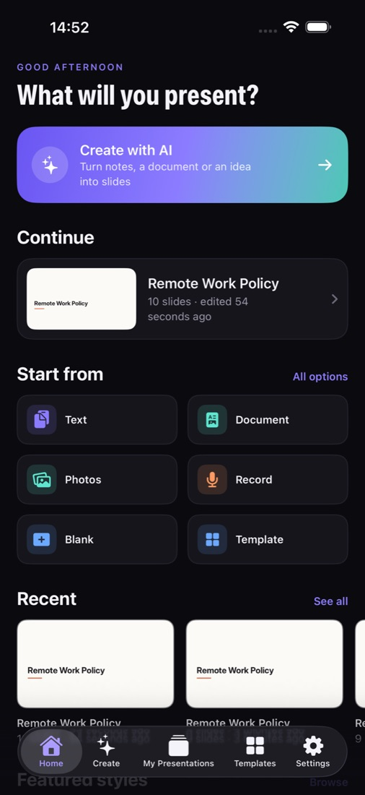
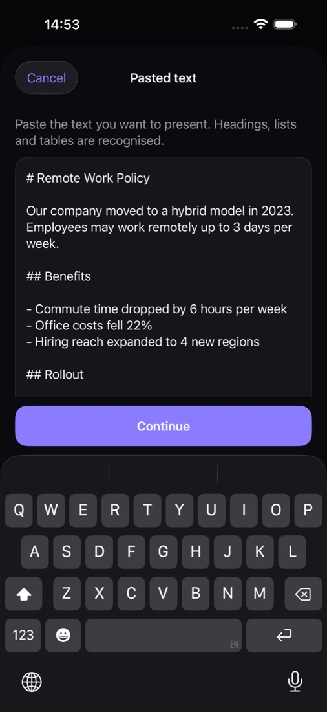
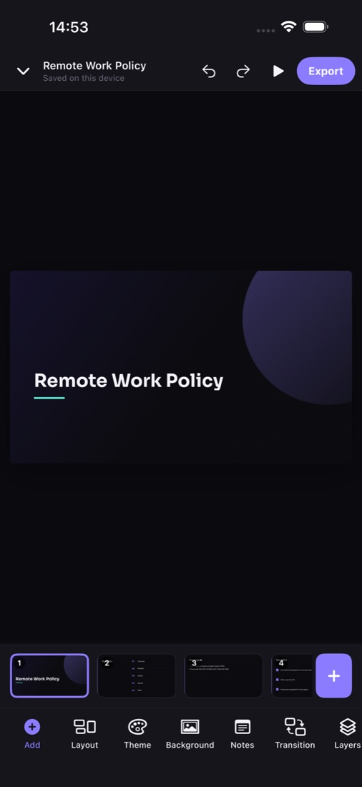
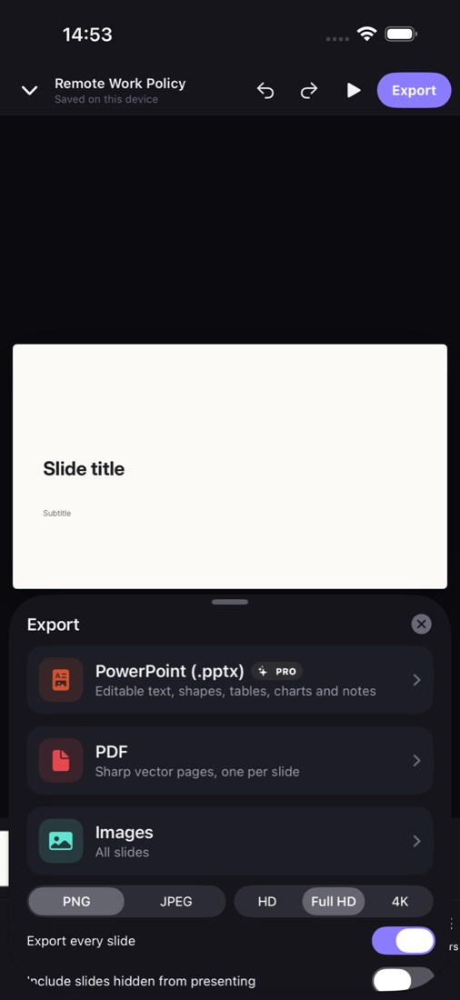

From notes to a finished presentation.
Slide Studio AI turns pasted text, documents, photos or your voice into a designed, fully editable deck. Edit on a native canvas, present full-screen with notes, and export real PowerPoint, PDF and image files. For iPhone, iPad, Mac and Android.




Editable, not a pictureEvery slide is real text, shapes, charts and tables — in the app and in the exported PowerPoint file.
20 designed stylesContent is matched to the right layout: timelines, comparisons, charts, quotes and more.
Your files stay with youPresentations are stored on your device. Text is only sent for AI writing when you choose it.
Notlardan bitmiş bir sunuma.
Slide Studio AI yapıştırdığın metni, belgeleri, fotoğrafları ya da sesini tasarlanmış ve tamamen düzenlenebilir bir sunuma çevirir. Yerel tuval üzerinde düzenle, notlarınla tam ekran sun; gerçek PowerPoint, PDF ve görsel olarak dışa aktar. iPhone, iPad, Mac ve Android için.
Resim değil, düzenlenebilirHer slayt gerçek metin, şekil, grafik ve tablodur — uygulamada da, PowerPoint dosyasında da.
20 tasarım stiliİçerik doğru yerleşimle eşleşir: zaman çizelgesi, karşılaştırma, grafik, alıntı ve daha fazlası.
Dosyaların sende kalırSunumlar cihazında saklanır. Metin yalnızca AI ile yazmayı seçtiğinde gönderilir.